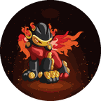

I found a self DOM XSS bug that seemed harmless, chained it with five minor bugs. Together, they turned one ordinary link into a complete account takeover.
A self DOM XSS that looked harmless, chained with nine small bugs — one ordinary link, and the account is gone for good.